Expanded Image View
Reproducing and extending a Danish population study
Abstract
Background: Lung cancer (LC) is the leading cause of cancer-related deaths globally, prompting many countries to adopt screening programs. While screening typically relies on age and smoking intensity, more efficient risk models exist. We developed a Bayesian network (BN) for LC detection, testing its resilience with varying degrees of missing data and comparing it to a prior machine learning (ML) model. Methods:A retrospective cohort of 9,940 patients referred for LC assessment in Southern Denmark (2009–2018) was analyzed. BN models were evaluated across 0–30% missing data levels with expert-based vs. data-driven structures and discretization methods. Results: BN models maintained stable AUC of 0.737–0.757 across all missing data levels, compared to 0.77 for the ML benchmark. Models were well-calibrated with positive net benefit in decision curve analysis when predicted risk exceeded 5%. Conclusion: Bayesian networks demonstrate significant resilience to missing data and offer comparable performance, calibration, and clinical utility to traditional ML models, making them a relevant method for future lung cancer detection and screening strategies.
Inspect the original publication directly. Click anywhere on the preview box below to open the full-screen reader.
Patient presenting with non-specific symptoms in primary care. Below is the evidence vector containing 23 baseline biomarkers. Drag the slider to simulate missing orders in daily practice.
| Age | 72 yrs | High Risk |
| Sex | Male | Standard |
| Smoking | Current Smoker | 92.2% in LC |
| CRP | 15.2 mg/L | Elevated |
| LDH | 260 U/L | Elevated |
| Hemoglobin | 8.1 mmol/L | Low |
| Albumin | 40.2 g/L | Low |
| Calcium | 2.40 mmol/L | Normal |
| Leucocytes | 9.8 × 10⁹/L | Elevated |
| Neutrophils | 6.8 × 10⁹/L | Elevated |
| Platelets | 330 × 10⁹/L | High |
| Lymphocytes | 1.80 × 10⁹/L | Normal |
| Monocytes | 0.75 × 10⁹/L | High |
| Eosinophils | 0.12 × 10⁹/L | Normal |
| Basophils | 0.04 × 10⁹/L | Normal |
| INR | 1.02 | Normal |
| ALAT | 22 U/L | Normal |
| Amylase | 28 U/L | Normal |
| AlkPhos | 85 U/L | High |
| Bilirubin | 8 μmol/L | Normal |
| Creatinine | 75 μmol/L | Normal |
| Potassium | 4.0 mmol/L | Normal |
| Sodium | 139 mmol/L | Normal |
Early detection of lung cancer in primary care is challenged by non-specific symptoms and incomplete laboratory workups. Bayesian Networks provide an interpretable, probabilistic solution that naturally handles missing data.
Architecture I
From raw patient records to a calibrated per-patient risk score, via dual discretization and dual structure-learning strategies.
Architecture I Full Description:
1. Patient Cohort (Data Input): 9,940 patient records containing demographics (Age, Sex, Smoker) and 20 blood biomarkers along with binary Lung Cancer (LC) diagnostic labels.
2. MCAR Missing-Data Injection: Evaluated at 0%, 10%, 20%, and 30% missingness levels to test real-world primary care lab ordering incompleteness.
3. Dual Discretization Strategies: Continuous biomarkers are discretized via (A) Clinical Reference Ranges (low, normal, high) or (B) MDLP Binning (Fayyad–Irani entropy splitting).
4. Dual Structure Learning: Graphs are constructed via (A) Expert-Elicited DAG (38 causal arcs designed by clinicians) or (B) Data-Learned DAG (K2 hill-climbing score search).
5. Available-Case MLE & Variable Elimination: Conditional Probability Tables (CPTs) are fit using available-case maximum likelihood with Laplace smoothing (α = 1). Exact marginal inference P(LC = 1 | Eobs) is calculated without requiring data imputation.
The paper analyzes 9,940 high-risk patients from Southern Denmark (2009–2018). Side-by-side visual comparison proves our synthetic dataset reproduces the exact cohort demographics and lab distributions.
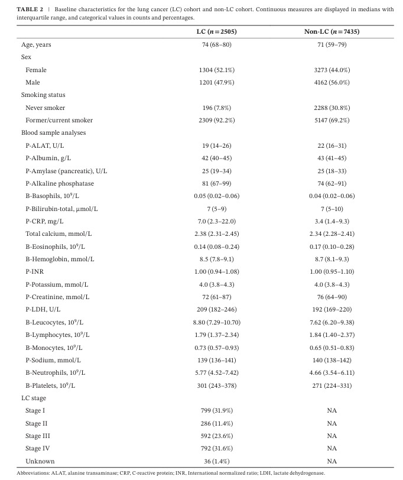
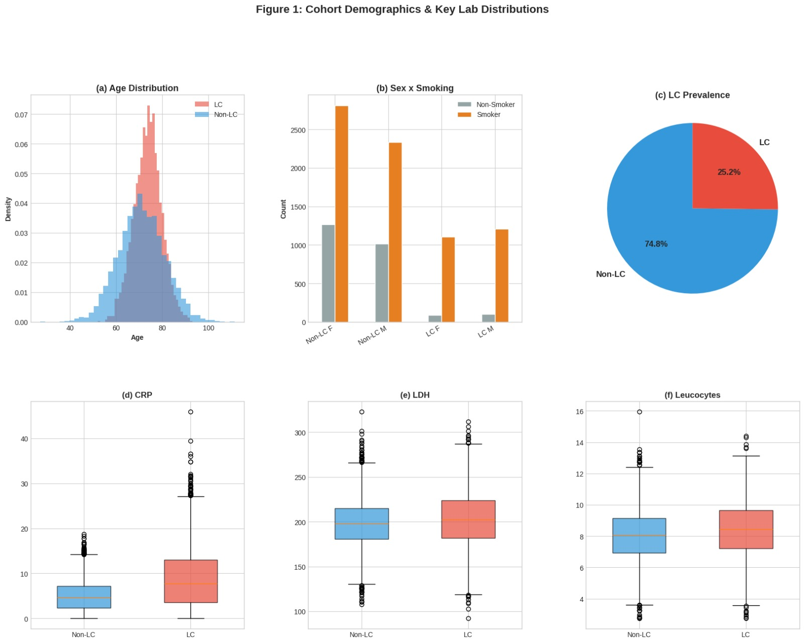
Similarity Proof: The synthetic dataset reproduces the cohort demographics and key lab distributions from the original paper.
Standard ML imputation degrades rapidly under missingness. The Bayesian Network bypasses synthetic imputation entirely through exact variable elimination.
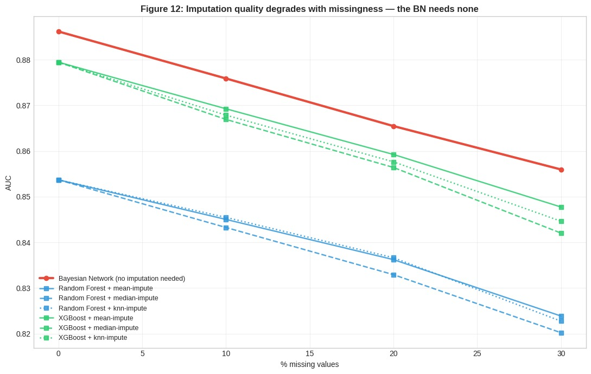
Figure 12: Imputation Quality Degrades with Missingness (our Export)
Side-by-side comparison of the our Matplotlib export alongside an interactive SVG DAG comparison. Toggle "Show Differences" to reveal pruned connections in RED.
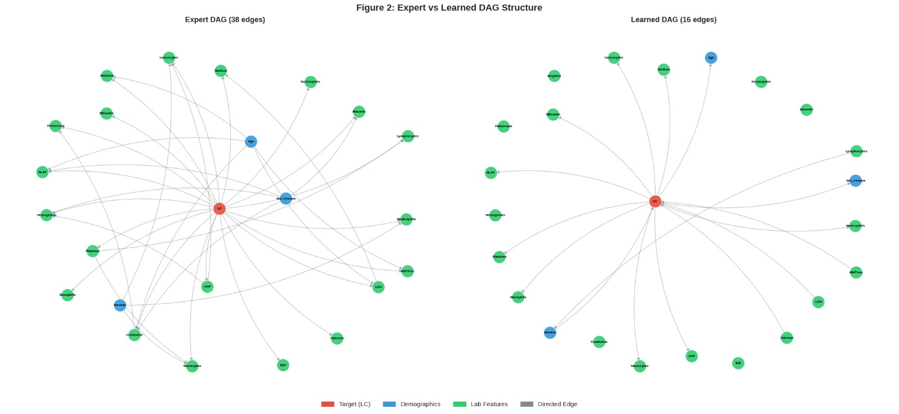
Figure 2: Expert vs Learned DAG Structure (our Export)
Consensus of 3 clinicians. Assumes direct causal links from LC to all 20 labs.
Learned via structure search. Strips non-informative arcs to prevent overfitting.
Comprehensive benchmarks across 16 configurations, missing data degradation, probability distributions, and prediction correlation.
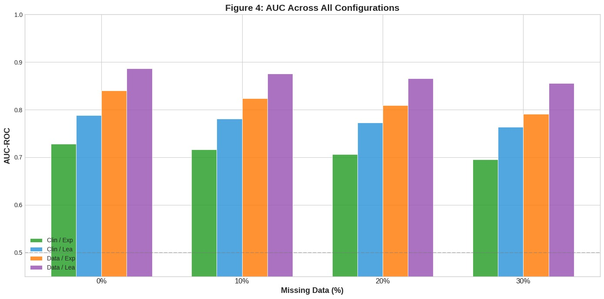
Original 16 Configuration AUC Evaluation Grid (our Export)
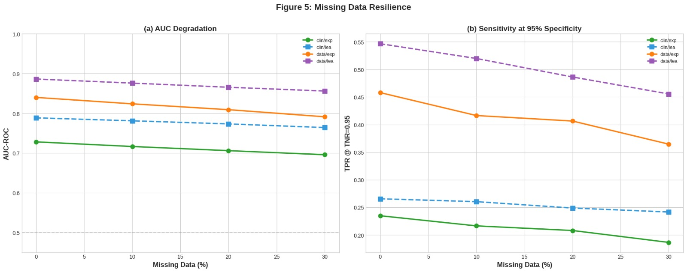
Figure 5: Missing Data Resilience (our Export)
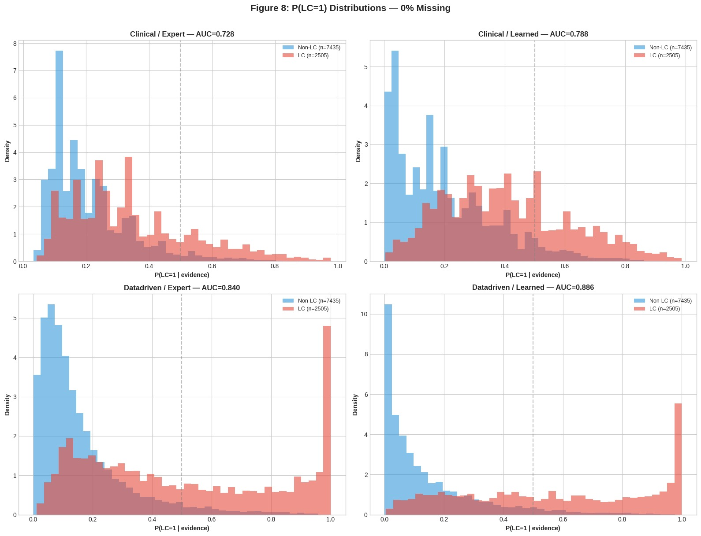
Figure 8: P(LC=1) Distributions — 0% Missing (our Export)
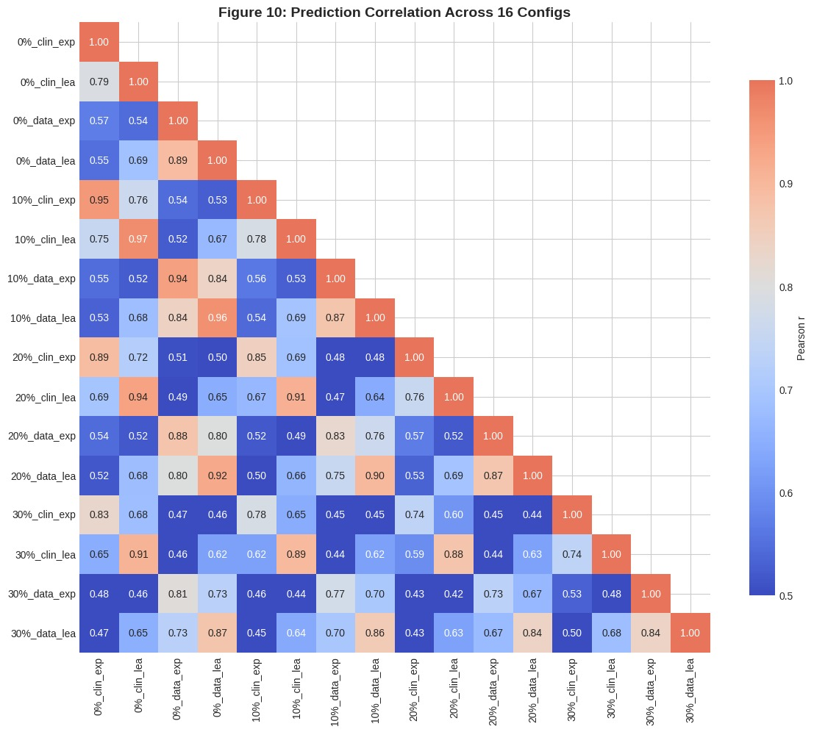
Figure 10: 16×16 Prediction Correlation Matrix (our Export)
Pick a model configuration and a decision threshold, then see the live confusion matrix and diagnostic metrics derived from its P(LC=1) distribution at 0% missingness.
Diagnostic metrics
Counts are scaled to the paper's cohort (Non-LC n=7435, LC n=2505). The 5% clinical-utility cutoff is a reference point on the threshold slider.
Original paper benchmark evaluating performance across discretization strategies (EFD/EWD vs Expert) and missing data levels (0%–30%).
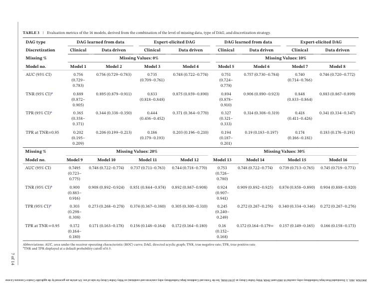
Paper Table 3 Summary: Evaluates AUC-ROC and TPR @ 95% specificity across discretization modes (EFD/EWD vs Expert) and missingness levels (0% to 30%).
Extended benchmarks evaluating Bayesian Networks against Random Forest and XGBoost across external datasets (NLST subset, Kaggle, Synthetic). our Extension (Not in paper).
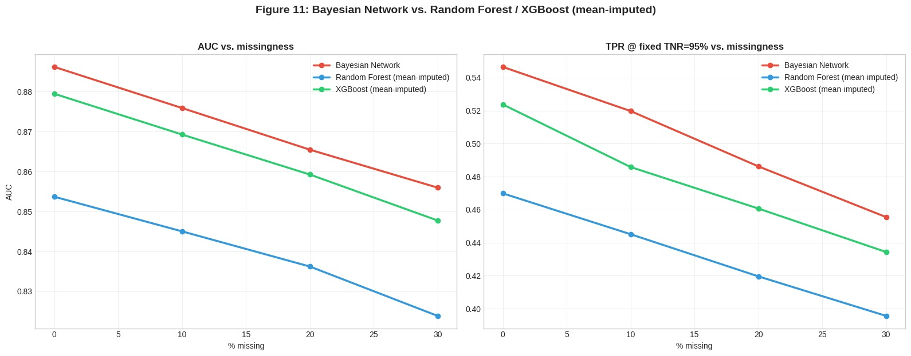
Figure 11: Bayesian Network vs. Random Forest / XGBoost (mean-imputed)
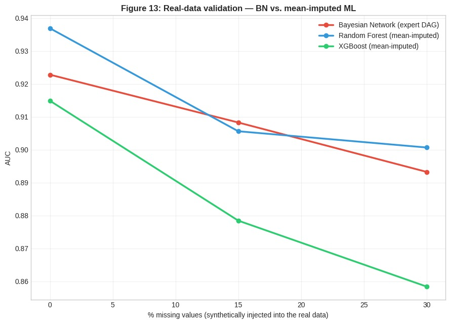
Figure 13: Real-data validation — BN vs. mean-imputed ML
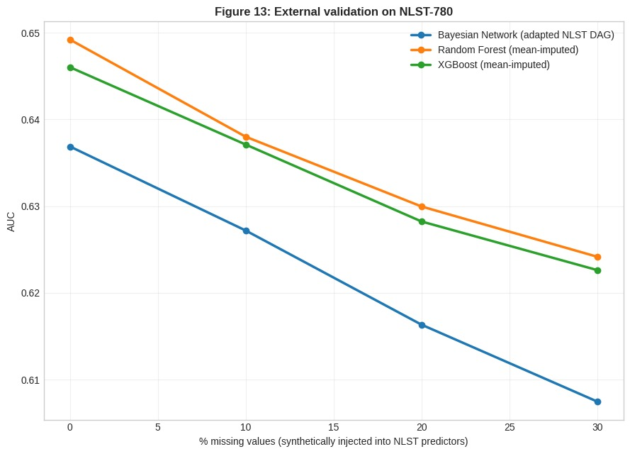
Figure 13: External validation on NLST-780
The Bayesian Network's posterior probability is engineered as an additional input feature for a downstream neural classifier.
Architecture II
The Bayesian network's posterior probability is engineered as an additional input feature for a downstream neural classifier.
Architecture II Full Description:
1. Split & Probabilistic Feature Engineering: Features are passed simultaneously to a retrained Bayesian Network and a median imputer within each outer fold.
2. Bayesian Posterior Generation: The Bayesian Network calculates P(LC | X) via exact variable elimination for both training and held-out rows.
3. Feature Fusion: The single posterior probability scalar is concatenated onto the 4-dimensional median-imputed feature vector [Age, Sex, Race, Smoker, PBN] ∈ ℝ5.
4. Deep Multilayer Perceptron Classification: Passed through a StandardScaler into a 4-layer MLP neural network (128 → 64 → 32 → 16) trained with Adam optimizer and early stopping, preventing data leakage across outer cross-validation folds.
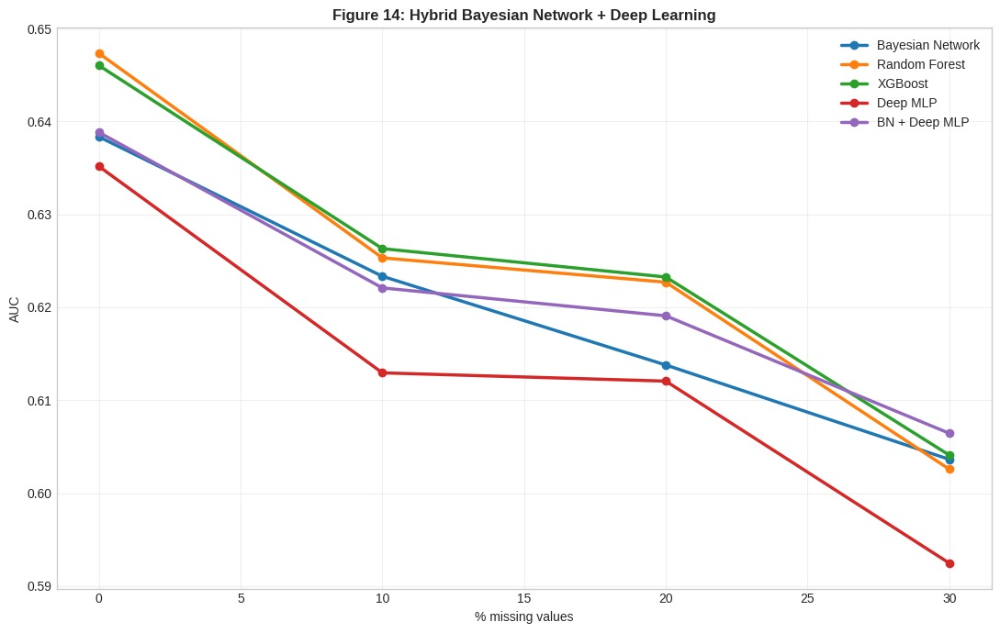
Figure 14: Hybrid Bayesian Network + Deep Learning
Three independent base learners (BN, XGBoost, Deep MLP) are combined by a logistic-regression meta-learner, trained on leak-free out-of-fold predictions.
Architecture III
Three independent base learners are combined by a logistic-regression meta-learner, trained on leak-free out-of-fold predictions.
Architecture III Full Description:
1. Inner 5-Fold Cross-Validation (Out-of-Fold Generation): Within each outer training fold, an inner 5-fold CV split fits the Bayesian Network, XGBoost, and Deep MLP to generate out-of-fold risk probability estimates Pout-of-fold[Pin, Pout-of-fold[XGB], Pout-of-fold[MLP]].
2. Meta-Learner Fitting: A Logistic Regression meta-learner (C = 1.0) is trained on these out-of-fold predictions, guaranteeing zero data leakage across splits.
3. Outer Test Prediction & Stacking: All three base models are refit on the complete outer training fold and used to predict test fold meta-features, which are scored by the trained meta-learner.
4. Ensemble Performance: Combines structured probabilistic reasoning with non-linear gradient boosting and deep representations, achieving the highest missing data resilience on the NLST cohort.
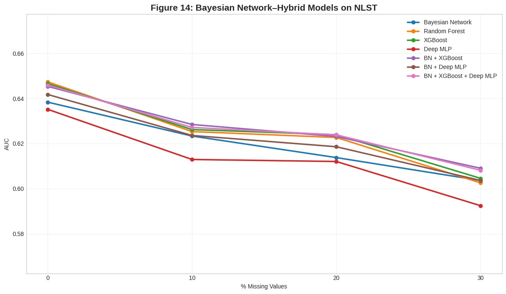
Figure 14: Bayesian Network–Hybrid Models on NLST